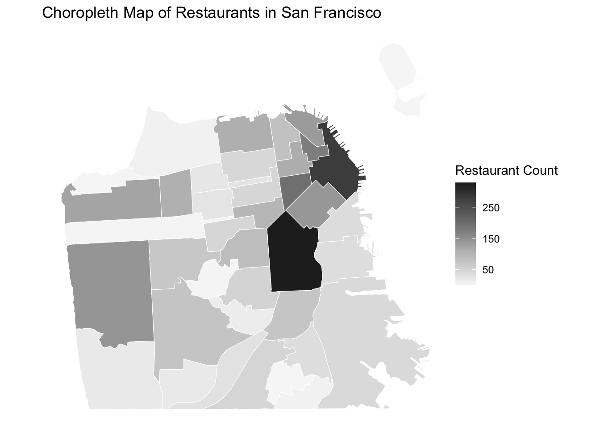
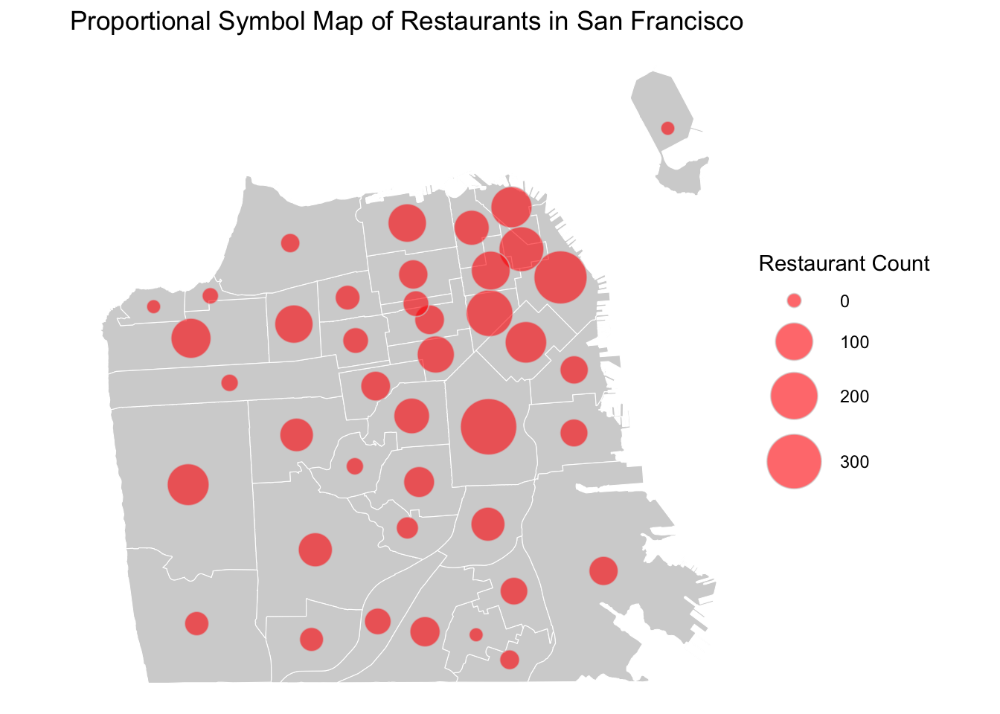
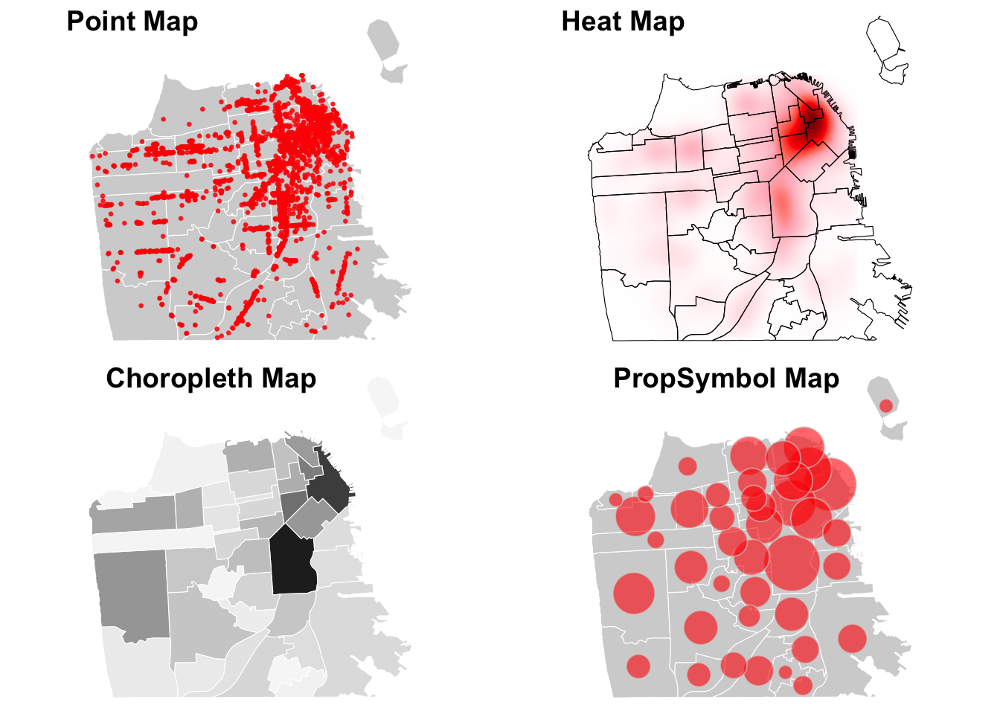

Chapter 3 From People to Built Environment
So far, we have focused on embedding demographic data into places. However, sociological questions extend beyond just understanding people in places. People don’t simply exist in locations—they interact with the built environment, including schools, local businesses, landmarks, and more. In GIS terms, this type of data is known as point-of-interest (POI) data, which refers to specific points or useful sites identified by geographic coordinates (latitude and longitude). In this tutorial, we will use Airbnb listings and local business data as examples of point-of-interest data.
3.1 Transforming Airbnbs
When data contains latitude and longitude coordinates, we can transform it into an sf object by using the st_as_sf command. Here, we’ll use San Francisco Airbnb data to illustrate this process. Unlike neighborhood boundaries, which have polygon geometries, POIs will have point geometries.
# Import the Airbnb data
sfbnb <- read.csv("data/sfbnb.csv")
# Transform lat/long data into sf object
sf_sfbnb <- st_as_sf(sfbnb,
coords = c("longitude", "latitude"),
crs = 4326 # specify the projection; WGS84 is a standard projection for global mapping.
)# Check variables
head(sf_sfbnb, n=3)## Simple feature collection with 3 features and 7 fields
## Geometry type: POINT
## Dimension: XY
## Bounding box: xmin: -122.4525 ymin: 37.74511 xmax: -122.421 ymax: 37.76931
## Geodetic CRS: WGS 84
## id trt10 analysis property_type review_scores_rating
## 1 958 16700 haight ashbury Apartment 97
## 2 5858 25300 bernal heights Apartment 98
## 3 7918 17102 haight ashbury Apartment 85
## review_scores_location number_of_reviews geometry
## 1 10 176 POINT (-122.4339 37.76931)
## 2 10 111 POINT (-122.421 37.74511)
## 3 9 17 POINT (-122.4525 37.76669)You can see that geometry is points, rather than polygons. Each point represents an Airbnb property (id- unique identifier). It also indicates the census tract (trt10) and neighborhood name (analysis) in which the Airbnb property is located. The data also contains attributes of the Airbnb property, such as property type, review score ratings, and the number of reviews.
You can save the converted file as geojson using the “st_write” command.
# Export the Airbnb data as a geojson file
st_write(sf_sfbnb, "processed-data/airbnbs.geojson", driver = "GeoJSON", delete_dsn = TRUE)3.2 Geocoding Restaurants
Sometimes, your data may lack latitude and longitude information. Instead, the data may contain street addresses. In such cases, we need to perform geocoding which converts formatted addresses into latitude and longitude coordinates, allowing the data to be displayed as points on a map. Below, we will demonstrate the geocoding process using the restaurant data in San Francisco.
# Import restaurant data
sfbiz <- read.csv("data/sfbiz_clean.csv")
# Check if lat and lon exists
head(sfbiz, 3)## company address_line_1 city zipcode
## 1 JOHN'S GRILL 63 ELLIS ST SAN FRANCISCO 94102
## 2 TAD'S STEAKHOUSE 120 POWELL ST SAN FRANCISCO 94102
## 3 SAM'S GRILL & SEA FOOD RSTRNT 374 BUSH ST SAN FRANCISCO 94104
## naics8_descriptions employee_size_location sales_volume_location state
## 1 FULL-SERVICE RESTAURANTS 20 1424 CA
## 2 FULL-SERVICE RESTAURANTS 19 1353 CA
## 3 FULL-SERVICE RESTAURANTS 35 2491 CAIn this data, we can see that latitude and longitude coordinates do not exist. However, it contains information on street address, city, state, and zip code. To carry out geocoding, first, we have to create a field that displays a full address. Based on the full address, we can get the coordinates via open street map (osm). Once the data is geocoded, we can transform this data frame to sf object for mapping.
# Set up
library(tidygeocoder)
# Create a full address field (street address, city, state, zipcode)
sfbiz <- sfbiz %>%
mutate(full_add = paste(address_line_1, city, state, zipcode, sep = ", "))
# Geocode the full address
geocoded_sfbiz <- sfbiz %>%
sample_n(5) %>% # the full data can take a while, so let's try on a smaller sample
geocode(address = full_add, method = 'osm')
# Check the geocoded data
geocoded_sfbiz %>%
select(lat, long)## # A tibble: 5 × 2
## lat long
## <dbl> <dbl>
## 1 37.8 -122.
## 2 37.8 -122.
## 3 37.8 -122.
## 4 37.8 -122.
## 5 37.8 -122.# For the purpose of this tutorial, we can use the prepared, full geocoded data
prep_sfbiz <- read.csv("data/geocoded_sfbiz_clean.csv")
# Transform lat/long data into sf oject
sf_sfbiz <- st_as_sf(prep_sfbiz,
coords = c("long", "lat"),
crs = 4326)# Export the restaurant data as a geojson file
st_write(sf_sfbiz, "processed-data/restaurants.geojson", driver = "GeoJSON", delete_dsn = TRUE)Now that we have restaurant locations as points, we can simply overlay the restaurant locations on top of the neighborhood boundaries layer.
# Plot the restaurant locations
ggplot() +
# display neighborhood boundaries as a layer
geom_sf(data = sfnh,
fill = "lightgray",
size = 0.02,
color = "white"
) +
# add restaurants as another layer
geom_sf(data = sf_sfbiz,
color = "red",
size = 0.5, alpha = 0.8
) +
theme_void() +
labs(title = "Restaurants in San Francisco")
In this map, we can see the distribution of restaurants in San Francisco. However, because restaurants are both in and outside of neighborhood boundaries, it is hard to discern spatial patterns of restaurants by neighborhoods. Spatial join, which we will discuss in the next section, allows us to spatially link restaurants to neighborhoods, so that we can reduce points data to the level of neighborhoods.
3.3 Spatial join
Spatial join allows you to combine two sf objects based on the spatial relationship between their geometries. For example, we can think of the relationship between neighborhoods (polygons) and restaurants (points).
- Neighborhoods (x) contain restaurants (y), or
- restaurants (x) are within neighborhoods (y).
# Before joining, check if they have the same projections
st_crs(sfnh) == st_crs(sf_sfbiz)## [1] TRUE# Perform spatial join
nh_joined <- st_join(x = sfnh, # join
y = sf_sfbiz, # target
join = st_contains, # does x(polygon) contains y(point)?
left = TRUE) # keep all neighborhoods
# Explore
head(nh_joined, 3)## Simple feature collection with 3 features and 10 fields
## Geometry type: MULTIPOLYGON
## Dimension: XY
## Bounding box: xmin: -122.4428 ymin: 37.77644 xmax: -122.4202 ymax: 37.79037
## Geodetic CRS: WGS 84
## nhood company address_line_1
## 1 Western Addition HINATA SUSHI 810 VAN NESS AVE
## 1.1 Western Addition BURGER KING 819 VAN NESS AVE
## 1.2 Western Addition ISTITUTO ITALIANO DI CULTURA 601 VAN NESS AVE # F
## city zipcode naics8_descriptions employee_size_location
## 1 SAN FRANCISCO 94109 FULL-SERVICE RESTAURANTS 6
## 1.1 SAN FRANCISCO 94109 FULL-SERVICE RESTAURANTS 58
## 1.2 SAN FRANCISCO 94102 FULL-SERVICE RESTAURANTS 6
## sales_volume_location state full_add
## 1 427 CA 810 VAN NESS AVE, SAN FRANCISCO, CA, 94109
## 1.1 2447 CA 819 VAN NESS AVE, SAN FRANCISCO, CA, 94109
## 1.2 427 CA 601 VAN NESS AVE # F, SAN FRANCISCO, CA, 94102
## geometry
## 1 MULTIPOLYGON (((-122.4214 3...
## 1.1 MULTIPOLYGON (((-122.4214 3...
## 1.2 MULTIPOLYGON (((-122.4214 3...In the joined data, we can see that restaurants (company) are nested within neighborhoods (nhood). We can aggregate this data to the neighborhood level and get the number of restaurants per neighborhood. Some neighborhoods may not any have restaurants, so you want to preserve that as 0 and not count as 1.
# Count restaurants per neighborhood
restaurant_counts <- nh_joined %>%
st_drop_geometry() %>%
group_by(nhood) %>%
summarize(n_rst = sum(!is.na(company)), # don't count NA as 1
)As the count of restaurants is a quantitative variable, we can visualize it using the choropleth map. I first join the restaurant counts data with neighborhood boundaries to get the neighborhood-level spatial data. Then, I create the map using custom breaks based on the distribution of the number of restaurants within a neighborhood.
# Join the restaurant count to neighborhood boundaries
biz_colors <-
sfnh %>%
left_join(restaurant_counts,
by = "nhood") %>%
arrange(desc(n_rst))
# Create the map using Custom breaks
ggplot() +
geom_sf(data = biz_colors,
aes(fill = n_rst),
size = 0.2,
color = "white") +
scale_fill_distiller(type="seq",
palette = "Greys",
breaks = c(50, 150, 250), # specify custom breaks
direction = 1,
) +
theme_void() +
labs(fill = "Restaurant Count")
Another way of visualizing a quantitative variable is a proportional symbol map. Proportional symbol maps are particularly useful for absolute quantitative variables (e.g., raw counts, measurements) while choropleth maps are more suitable for relative quantitative variables (e.g., ratios, percentages, proportions).
# Create neighborhood centroids
nh_cent <- st_centroid(sfnh)
# Check centroids
print(nh_cent)## Simple feature collection with 41 features and 1 field
## Geometry type: POINT
## Dimension: XY
## Bounding box: xmin: -122.5014 ymin: 37.71287 xmax: -122.3695 ymax: 37.82065
## Geodetic CRS: WGS 84
## First 10 features:
## nhood geometry
## 1 Western Addition POINT (-122.4306 37.78183)
## 2 West of Twin Peaks POINT (-122.4599 37.73518)
## 3 Visitacion Valley POINT (-122.4101 37.71287)
## 4 Twin Peaks POINT (-122.4498 37.75211)
## 5 South of Market POINT (-122.4059 37.77725)
## 6 Treasure Island POINT (-122.3695 37.82065)
## 7 Presidio Heights POINT (-122.4517 37.78631)
## 8 Presidio POINT (-122.4664 37.79738)
## 9 Potrero Hill POINT (-122.3936 37.75887)
## 10 Portola POINT (-122.409 37.72679)# Join the restaurant counts to neighborhood centroids
biz_symbols <-
nh_cent %>%
left_join(restaurant_counts,
by = "nhood") %>%
arrange(desc(n_rst)) # sort to ensure small points would be plotted in front of big points
# Create the proportional symbol map
ggplot() +
geom_sf(data = sfnh, # add a base map layer of boundaries
fill = "lightgray",
size = 0.02,
color = "white"
) +
geom_sf(data = biz_symbols,
aes(size = n_rst), # add a layer of symbols sized based on the restaurant counts
shape = 21, # specify a circle shape for symbols
fill = "red", # set a color to fill the shape
alpha = 0.6, # set a level of transparency
color = "lightgray") + # set a color for edges of the shape
scale_size(range = c(3, 13)) + # set min and max for the size of the symbols
theme_void() +
labs(size = "Restaurant Count") # legend title 
# Create the proportional symbol map (size) combined with the choropleth map (fill color)
ggplot() +
geom_sf(data = sfnh,
fill = "lightgray",
size = 0.02,
color = "white"
) +
geom_sf(data = biz_symbols,
aes(size = n_rst, fill = n_rst),
shape = 21,
color = "lightgray") +
scale_size(range = c(3, 10)) +
# add colors to the symbols
scale_fill_gradientn(colors = hcl.colors(4, # fill the shape with four different colors
"RdBu", # red-blue color scheme
rev = TRUE, # reverse the color scheme so that smaller values are blue
alpha = 0.9)) + # transparency
theme_void() +
labs(fill = "Restaurant Count", size = "Restaurant Count") + # combined legend title
guides(fill = guide_legend(title = "Restaurant Count",
order = 1), # title for the legend
size = guide_legend(title = "Restaurant Count",
order = 1)) # same title for size3.4 Export Maps
Now, let’s say you are ready export your maps for publication. We will publish a figure of two maps side by side, displaying two ways of visualizing the distribution of restaurant by neighborhood in San Francisco.
# Store and combine maps
map1 <- ggplot() +
geom_sf(data = sfnh,
fill = "lightgray",
size = 0.02,
color = "white"
) +
geom_sf(data = sf_sfbiz,
color = "red",
size = 0.5, alpha = 0.8
) +
theme_void()
map2 <- ggplot() +
geom_sf(data = biz_colors,
aes(fill = n_rst),
size = 0.2,
color = "white") +
scale_fill_distiller(type="seq",
palette = "Greys",
breaks = c(50, 150, 250),
direction = 1,
) +
theme_void() +
theme(legend.position = "none")
map3 <- ggplot() +
geom_sf(data = sfnh,
fill = "lightgray",
size = 0.02,
color = "white"
) +
geom_sf(data = biz_symbols,
aes(size = n_rst),
shape = 21,
fill = "red",
alpha = 0.6,
color = "lightgray") +
scale_size(range = c(3, 13)) +
theme_void() +
labs(size = "Restaurant Count")
map4 <- ggplot() +
geom_sf(data = sfnh,
fill = "lightgray",
size = 0.02,
color = "white"
) +
geom_sf(data = biz_symbols,
aes(size = n_rst, fill = n_rst),
shape = 21,
color = "lightgray") +
scale_size(range = c(3, 10)) +
# add colors to the symbols
scale_fill_gradientn(colors = hcl.colors(4,
"RdBu",
rev = TRUE,
alpha = 0.9)) +
theme_void() +
labs(fill = "Restaurant Count", size = "Restaurant Count") +
guides(fill = guide_legend(title = "Restaurant Count",
order = 1),
size = guide_legend(title = "Restaurant Count",
order = 1))
combined <- ggpubr::ggarrange(map1, map2, map3, map4, nrow=2, ncol=2,
labels = c("Point Map", "Choropleth Map", "PropSymbol Map", "PSxC Map"))
print(combined)
# Export the combined map
ggsave("sf_restaurant_maps.png", plot = combined,
width = 9, height = 9,
dpi = 300 # resolution
)While it is not strictly expected in sociology papers, you can also add a north arrow and a scale bar to a map using the ggspatial package.
library(ggspatial)# Adding a scale bar and a north arrow
ggplot() +
geom_sf(data = biz_colors,
aes(fill = n_rst),
size = 0.2,
color = "white") +
scale_fill_distiller(type = "seq",
palette = "Greys",
breaks = c(50, 150, 250),
direction = 1) +
theme_void() +
labs(fill = "Restaurant Count",
title = "Distribution of Restaurants in San Francisco") +
# add a scale bar
annotation_scale(location = "bl", # "br" is for bottom right, adjust as needed
pad_y = unit(0.01, "cm") # place the scale bar close to the bottom
) +
# add a north arrow
annotation_north_arrow(location = "tl", # "tl" is for top left, adjust as needed
style = north_arrow_fancy_orienteering)